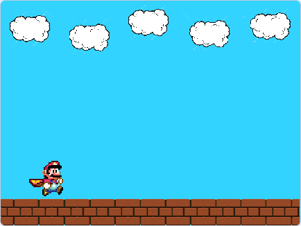
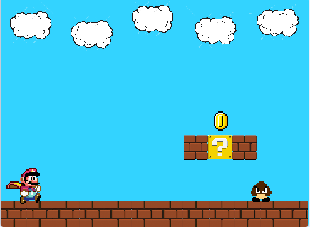
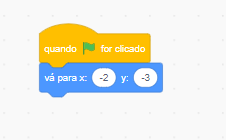
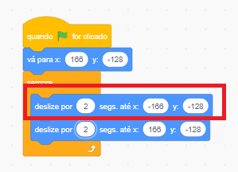
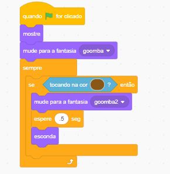
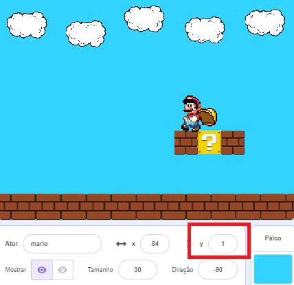
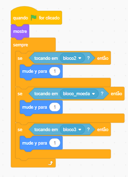
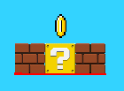
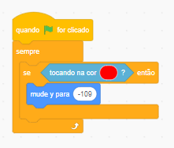
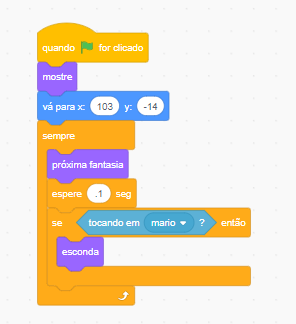

Primeiros passos criando o jogo:
Através de capturas de
tela irei mostrar o passo a passo para que você possa criar o seu jogo. Se você ainda não conhece
a plataforma do Scratch ou não tem familiaridade, comece por aqui primeiro, e só depois vá para o
código do jogo, combinado?!
Vamos começar!
1º: Apague o gatinho clicando sobre a lixeira no canto superior direito do ator e renomeie o arquivo o nosso arquivo para "Jogo_do_Mario" A barra para renomear o arquivo se na parte superior da página ao lado de Editar.
2º: Importe o gif do personagem para dentro do Scratch. Se você não sabe como fazer isso, clique
aqui e aprenda sobre a plataforma Scratch primeiro.
Meu ator do Mário já está importado e disponível na minha lista de atores.

Inserindo os blocos de movimento:
3º: O bloco de código a seguir é para que o ator do Mário consiga se movimentar para a esquerda e para a direita. Lembrando que as cores dos bloquinhos são para ajudar a nos localizar na página: blocos de eventos são amarelos, blocos de controle laranja, sensores azul claro e por ai vai... Cada pecinha tem a cor correspondente ao seu bloco.

4º: Adicione ao código os blocos 'próxima fantasia' e 'aponte para a direção 90'. Mas para que o aponte para a direção funcione corretamente, clique na opção 'direção' que fica em baixo do palco e selecione as duas setinhas que estão juntas. Se esse processo não for feito, o seu ator irá andar de ponta cabeça.


Diminua o tamanho do Mário para 30, assim ficará melhor para jogar. Feito isso vamos montar o cenário do jogo, que terá vários atores.
Desenhando o Cenário:
5º Clique para pintar o cenário. Assim que o editor do cenário abrir, converta para btmap e depois renomeie como 'principal'.

6º: Selecione o balde de tinta e uma cor para reprensentar o céu em 'preencher'. Agora basta clicar na tela em branco para pintar o cenário.

7º: Importe a nuvem para a nossa lista de atores para que possamos adicioná-la ao nosso cenário e deixá-lo mais bonito. Após importa-la, vamos diminuir o seu tamanho. Selecione a setinha nas ferramentas, clique com o mouse no canto superior esquerdo, segure e arraste sobre todo o desenho até que a nuvem toda esta selecionada.

8º: Diminua o seu tamanho utilizando as bolinhas laterais até o tamanho desejado. Para copiar clique na opção de 'copiar' e depois 'colar'. Reposicione a nova nuvem no cenário. Aqui eu fiz 5 cópias para que o cenário não fique tão poluido.

Agora o palco se encontra desta maneira:
9º: Vamos adicionar os bloquinhos para fazer o chão. Importe-o nos atores assim como fizemos com a nuvem e já diminua o seu tamanho. Copie e cole vários bloquinhos um ao lado do outro até você obter esse resultado:
Por enquanto vamos deixar o cenário assim, mas daqui a pouco adicionaremos mais atores ao jogo.
Continuando os movimentos do Mário
10º: O próximo código é para que o mário sempre ande sobre os blocos. Primeiro, posicione o Mário em cima dos bloquinhos e veja o valor de y abaixo do palco:

Adicione o código logo abaixo do bloco "se seta para esquerda pressionada", como mostra a imagem. Confira se o valor de y de dentro do código é o mesmo que o abaixo do palco. Feito isso o mário já estará andando somente sobre o chão do nosso cenário.
11º: O próximo bloco de código será inserido logo abaixo de 'quando a bandeira for clicada'. Esse bloco definirá o ponto inicial do ator assim que o jogo começar. Posicione o ator primeiro e somente depois insira o bloco ao código.

Fazendo o ator pular
12º: Para que o ator pule é preciso criar uma variável e um bloco. Em 'variáveis', clique em
'criar
uma váriavel' e dê o nome de pulo. Crie essa variável para todos os atores.
Em seguida vá em 'meus blocos' e clique 'criar um bloco' e de o nome de 'gravidade'


13º: Adicione o seguinte código ao ator conforme mostra a imagem para que o mesmo pule sobre os obstáculos:

Agora clique na bandeira e teste até aqui o seu código, o Mário já deve estar andando e pulando.
Adicionando outros atores
14º: Vamos adicionar os outros atores que faltam ao nosso cenário para completar o jogo.
Importe para o Scratch o gif da moeda, do bloco de moeda, do goomba e mais uma vez o mesmo que
utilizamos para fazer o chão.
E nossa lista de atores se encontra assim:

15º: Diminua o tamanho de todos os atores para que fiquem em um tamanho adequado no palco:
16: Duplique o ator do 'bloco 2' e posicione todos os atores dentro do palco conforme exemplo abaixo:
Comandos nos demais atores
Os próximos blocos de códigos devem ser colocados em todos os atores pois definiremos a posição inicial onde cada um iniciará o jogo. Lembrando que você precisa primeiro organiza-los na tela e somente depois colocar o código.
17º: Agora iremos realizar o comando no ator do Goomba para que ele ande para a direita e esquerda.
Pegaremos o comando 'deslize por 1 segs até x: y:' e só iremos adicionar o sinal de - (menos) no
primeiro
bloquinho e no eixo x. Os valores devem estar o mesmo do ponto inicial do ator no jogo, por exemplo,
se o seu ator irá iniciar o jogo com as coordenadas x: -170 y: -110 os bloquinhos de dentro do
sempre precisam estar com as mesmas coordenadas, somente adicione o sinal de - (menos) no eixo x do
primeiro bloquinho.
Feito isso o Goomba já estará andando para a direita e para a esquerda.
18º: Agora criaremos outra fantasia do Goomba para que ele fique achatado quando o mário pular sobre
ele.
Vá em fantasias, duplique a primeira fantasia, selecione o ator e diminua seu tamanho na
vertical para que ele fique como na imagem abaixo:

19: O próximo bloco de código é para que ele mude de fantasia assim que for atingido pelo mário:
Dentro do 'tocando na cor' você irá selecionar a cor da bota do mário.
20º: Agora posicione o Mário sobre os bloquinhos flutuantes e veja o valor de y que mudará em baixo do palco, usaremos esse valor no próximo código:
O código a seguir deve ser inserido no ator do Mário, para que ele fique sobre os bloquinhos flutuantes assim que pular sobre ele:
21º: Faça uma linha vermelha em baixo de cada um dos blocos flutuantes, para que assim o mário não consiga atravessá-los se pular por baixo deles:
Adicione o código no ator do Mário:
22º: Por último iremos adicionar o código para animar a moeda:
Agora o jogo está quase finalizado, mas falta uma coisa, será que você percebeu?
O mário ainda não está morrendo ao tocar no Goomba, mas que tal você tentar fazer sozinho(a)
agora?
Com o que já aprendemos até aqui tenho certeza que você consegue!
Agora você pode praticar bastante, adicionar outros atores ao jogo, outros cenários, use a usa imaginação!
O desenvolvimento de jogos é muito valorizado e além de um hobby você pode fazer disso sua profissão no futuro, mas tem que praticar hein! Espero que tenha gostado e obrigada por acompanhar até aqui!